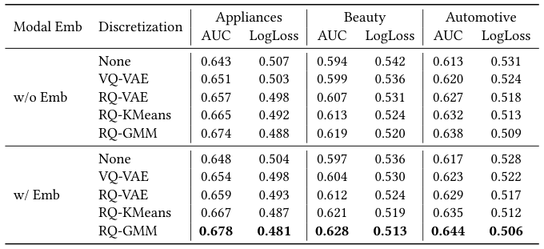
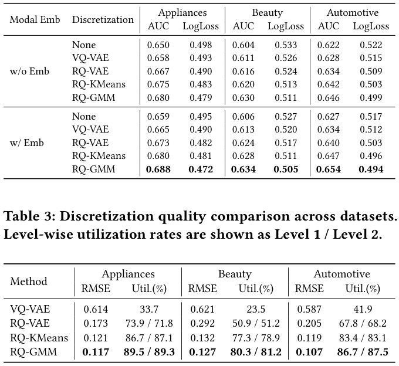
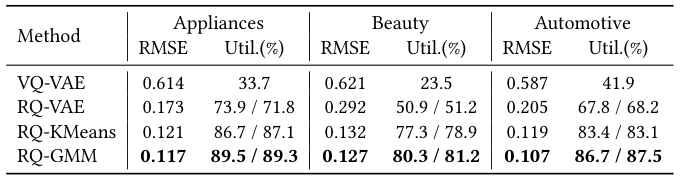
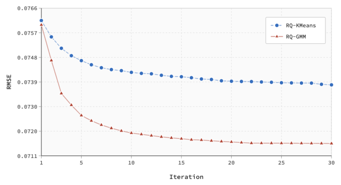

RQ-GMM: Residual Quantized Gaussian Mixture Model for Multimodal Semantic Discretization in CTR Prediction (残差量化高斯混合模型：面向CTR预测的多模态语义离散化)
- 会议/期刊: SIGIR 2026 (Under review, arXiv 预印本)
- 推荐链路定位: 精排 (CTR Prediction) — 特征侧语义ID离散化，服务于精排模型输入
- 研究方向: CTR预估与特征交叉 / 多模态推荐
- 论文原文: https://arxiv.org/abs/2602.12593v1
- 开源代码: 暂未开源
TL;DR (核心速览)
针对多模态连续嵌入直接喂入CTR模型存在优化目标错位与收敛速度不一致（"one-epoch phenomenon"）的问题，本文提出 RQ-GMM：用对角协方差高斯混合模型（GMM）替代 K-Means 的硬聚类，在残差量化框架下逐层做软分配量化，将 768 维 BERT 嵌入离散为两级语义ID。在 Amazon 三品类上以 FNN/IPNN 为骨干，AUC 全面超越 RQ-VAE/RQ-KMeans（如 Appliances w/ Emb 下 0.678 vs 0.667），码本利用率达 89.5%/89.3%，线上 7 天 A/B 广告主价值相对 RQ-VAE 提升 1.502%。
Background & Motivation (背景与动机)
- 领域背景与主流范式: 短视频/直播平台每日海量新内容涌现，多模态信息（图像、文本、音频）成为刻画物品的核心信号。利用多模态存在两条范式：(1) 直接用多模态特征构建物品索引做召回语义匹配——工程复杂度高、向精排延伸收益有限；(2) 将多模态特征作为额外输入融入全链路推荐——与现有架构结合自然、落地性强，是本文所处范式。
- 现有方法局限 (Limitations of Prior Work):
- 预训练目标错位：CLIP/BERT 等预训练模型优化的是通用语义表征而非用户偏好建模，嵌入中含大量与推荐无关的噪声。
- 联合训练动力学失配：稀疏类别特征（user/item ID）因高频曝光呈现"one-epoch phenomenon"快速收敛，而从多模态嵌入中提取偏好信号需要更长周期与精细去噪，二者收敛速度差异拖累整体性能。
- 现有离散化方法的三重缺陷：VQ-VAE 存在码本坍缩（codebook collapse），大量码本向量未被利用；RQ-VAE 虽用多级残差缓解利用率问题，但需小心平衡各层级，且基于欧氏距离的硬分配忽略分布特性，边界样本重建次优；RQ-KMeans 非参数高效，但假设等方差球状簇，对复杂多模态分布不成立，硬分配破坏边界样本的语义连续性且无法建模不确定性。
- 核心挑战 (Key Challenge): 两阶段优化（先离散化再喂CTR）能解耦语义提取与偏好建模，但第一阶段离散化的质量——码本利用率、重建精度、语义判别性——直接决定第二阶段语义ID的信息量。简单的特征拼接或加深网络无法解决分布建模缺失的问题。
- 核心洞察与切入点 (Key Insight): 多模态嵌入空间具有复杂的统计结构（非球状、异方差、密度不均）。用概率建模（每个码本向量建模为一个高斯分布，含均值+对角协方差+混合系数）替代硬聚类，可通过软分配更合理地处理边界样本、通过协方差刻画簇形状与不确定性、通过混合系数自动反映数据密度，从而同时提升利用率与重建精度。
Problem Formulation & Method (问题定义与方法架构)
1. 符号定义与输入表征 (Notations & Input Representations)
- 物品多模态嵌入 \(x \in \mathbb{R}^D\)，本文 \(D=768\)（BERT 生成）。
- 码本 \(\mathcal{C}=\{c_1,\dots,c_K\}\subset\mathbb{R}^D\)，两级结构每级 \(K=128\)。
- 残差 \(r^{(l)}\)，第 \(l\) 级量化输出 \(z_q^{(l)}\)，最终量化表征 \(z_q=\sum_{l=1}^{L} z_q^{(l)}\)，层数 \(L=2\)。
- 语义ID：\(\text{ID}(x)=[k_1^*,k_2^*,\dots,k_L^*]\)，\(k_l^*\in\{1,\dots,K\}\)。
- CTR 侧：用户集/物品集/上下文特征，嵌入维度 \(d_e=16\)，CTR MLP 隐层 \((128,32,8)\)。
2. 整体流水线 (Overall Architecture)
两阶段流水线：第一阶段离线对全量物品的 768 维多模态嵌入做 RQ-GMM 残差量化，输出两级语义ID并存入特征库；第二阶段将语义ID作为类别特征与原始模态嵌入（MLP 变换后）一并输入 CTR 模型（FNN/IPNN/DeepFM/DCN/DIN 均可），做 coarse-to-fine 的联合学习。线上推理时 RQ-GMM 以批处理方式离线运行，语义ID在线查表，不改变服务基础设施、不增加在线延迟。
flowchart TD
A["输入层: 物品多模态嵌入 x∈R^768 (BERT)"] --> B["RQ-GMM 第一阶段: 逐级 GMM 软分配残差量化"]
B --> C["语义ID [k1*, k2*] 写入特征库"]
C --> D["第二阶段: 特征拼接 [user_id, item_id, context, k1*, k2*, e_modal]"]
D --> E["CTR 模型 (FNN/IPNN) → ŷ, BCE 损失"]3. 核心模块设计与数学原理 (Key Designs & Formulations)
(1) 高斯混合量化（Gaussian Mixture Quantization）
在第 \(l\) 级，将残差 \(r^{(l-1)}\) 建模为 \(K\) 个高斯的混合：
其中 \(\sum_k \pi_k^{(l)}=1\)，\(\mu_k^{(l)}\in\mathbb{R}^D\)，为效率采用对角协方差 \(\Sigma_k^{(l)}=\text{diag}(\sigma_{k,1}^{(l)2},\dots,\sigma_{k,D}^{(l)2})\)。物理直觉：相比 K-Means 的等方差球状假设，对角协方差允许每个簇在不同维度上有不同尺度，能贴合多模态嵌入各向异性的分布。
(2) 软分配与量化（Soft Assignment & Quantization）
后验概率（E 步核心）：
推理时取后验最大的分量：\(k^*=\arg\max_k \gamma_k^{(l)}\)，\(z_q^{(l)}=\mu_{k^*}^{(l)}\)，残差更新 \(r^{(l)}=r^{(l-1)}-z_q^{(l)}\)。注意：E 步用软后验，但残差传播用硬分配（与推理一致），这是保证训练-推理一致性的关键设计。
(3) EM 参数学习（M-step）
逐级顺序优化，无需编码器-解码器，EM 是唯一优化过程。重建质量用 \(\text{RMSE}=\sqrt{\frac{1}{N}\sum_i\|x_i-z_{q,i}\|_2^2}\) 衡量。
(4) 下游 CTR 融合（Coarse-to-Fine）
特征构造 \(f_i=[\text{user\_id},\text{item\_id},\text{context},k_1^*,\dots,k_L^*,e_{\text{modal}}]\)，其中 \(e_{\text{modal}}=\text{MLP}(x_i)\in\mathbb{R}^{d_e}\)。每个语义ID经可学习嵌入表 \(e_l=W_l[k_l^*]\in\mathbb{R}^{d_e}\)（\(W_l\in\mathbb{R}^{K\times d_e}\)）映射，多级嵌入拼接或求和得 \(e_{\text{semantic}}\)。离散语义ID提供稳定的簇级锚点，连续嵌入保留细粒度信息，二者互补缓解训练动力学失配。
4. 训练目标、负采样与推理复杂度 (Optimization, Negative Sampling & Complexity)
- 损失函数: 第一阶段为 EM 极大似然（无显式损失式，等价于最大化混合高斯对数似然）；第二阶段 CTR 为二分类交叉熵： $\(\mathcal{L}_{\text{CTR}}=-\frac{1}{N}\sum_{i=1}^{N}\left[y_i\log\hat{y}_i+(1-y_i)\log(1-\hat{y}_i)\right]\)$
- 训练负采样策略: 原文未涉及负采样（CTR 为 pointwise 二分类，正负样本由评分阈值定义，非 pair/triplet 训练）。
- 时间与空间复杂度:
- 训练：单级单次 EM 迭代 \(O(NKD)\)，\(T\) 次迭代 \(L\) 级共 \(O(TL NKD)\)。
- 推理：单样本 \(O(LKD)\)，与 RQ-KMeans 同阶；对角协方差限制额外开销。
- 空间：每级存 \(K\) 个均值（\(KD\)）、\(K\) 个对角协方差（\(KD\)）、\(K\) 个混合系数（\(K\)），共 \(O(LKD)\)，与 RQ-KMeans 同阶。
- 相比 RQ-VAE 避免了编码器-解码器与复杂梯度传播，训练更稳定；相比 RQ-KMeans 每次迭代多协方差计算，但收敛更快、迭代更少，总训练时间相当。
Experimental Setup & Evaluation Protocol (实验设置与评估协议)
- 数据集统计与预处理: 使用 Amazon-Review 三个品类（Appliances、Beauty、Automotive）。评分 1–3 映射为 0（负），4–5 映射为 1（正）。原文未报告各数据集的用户数/物品数/交互数/稀疏度统计量（原文未报告）。
| 数据集 (Dataset) | 用户数 (#Users) | 物品数 (#Items) | 交互数 (#Interactions) | 稀疏度/密度 (Sparsity) | 模态/辅助特征说明 |
|---|---|---|---|---|---|
| Appliances | 原文未报告 | 原文未报告 | 原文未报告 | 原文未报告 | BERT 768 维嵌入 |
| Beauty | 原文未报告 | 原文未报告 | 原文未报告 | 原文未报告 | BERT 768 维嵌入 |
| Automotive | 原文未报告 | 原文未报告 | 原文未报告 | 原文未报告 | BERT 768 维嵌入 |
- 数据划分方式 (Splitting Strategy): 按时间顺序 8:1:1 划分 train/validation/test（chronologically split），属全局时间戳切分，可降低未来信息泄露风险；但原文未明确说明是否按用户内时间排序还是全局时间排序，存在一定表述模糊。
- 排名评测协议 (Ranking Protocol): 本文为 CTR 二分类任务，采用 AUC 与 LogLoss 评估，非 Full-Ranking 也非 Sampled Ranking（pointwise 分类评估，不涉及候选集排序协议）。
- 评价指标与显著性检验: 第一阶段用 RMSE 与码本利用率（Util.%）；第二阶段用 AUC、LogLoss。嵌入维度 \(d_e=16\)，CTR MLP 隐层 \((128,32,8)\)。所有实验重复 5 次不同随机种子，采用配对 t 检验，原文声称 RQ-GMM 相对 RQ-VAE/RQ-KMeans 在所有数据集上 AUC 与 LogLoss 均显著（all \(p<0.05\)）。
Key Experimental Results (核心实验结果)
1. 主实验对比 (Main Results)
以 FNN 骨干、w/ Emb 设置为例（表 1）：

| 数据集 | 指标 | None (w/ Emb) | RQ-VAE | RQ-KMeans | 本文 RQ-GMM | 相对次优 (RQ-KMeans) |
|---|---|---|---|---|---|---|
| Appliances | AUC | 0.648 | 0.659 | 0.667 | 0.678 | +1.65% |
| Appliances | LogLoss | 0.504 | 0.493 | 0.487 | 0.481 | -1.23% |
| Beauty | AUC | 0.597 | 0.612 | 0.621 | 0.628 | +1.13% |
| Beauty | LogLoss | 0.536 | 0.524 | 0.519 | 0.513 | -1.16% |
| Automotive | AUC | 0.617 | 0.629 | 0.635 | 0.644 | +1.42% |
| Automotive | LogLoss | 0.528 | 0.517 | 0.512 | 0.506 | -1.17% |
IPNN 骨干（表 2）结论一致，RQ-GMM 在 Appliances/Beauty/Automotive 上 AUC 分别达 0.688/0.634/0.654，均优于 RQ-KMeans 的 0.680/0.628/0.647。

离散化质量（表 3）：RQ-GMM 在 RMSE 与码本利用率上全面领先。Appliances RMSE 0.117（vs RQ-KMeans 0.121、RQ-VAE 0.173），利用率 89.5%/89.3%（vs RQ-KMeans 86.7%/87.1%、RQ-VAE 73.9%/71.8%）；Beauty RMSE 0.127、利用率 80.3%/81.2%；Automotive RMSE 0.107、利用率 86.7%/87.5%。VQ-VAE 利用率仅 23.5%–41.9%，码本坍缩严重。

收敛性（图 1）：在专有工业数据集上，RQ-GMM 相比 RQ-KMeans 收敛更快、最终 RMSE 更低、曲线更平滑波动更小，体现 EM 软分配比 K-Means 硬分配更稳定的优化动力学。

2. 消融实验与控制变量分析 (Ablation Study)
原文未设置传统意义上的模块移除消融，而是通过二维控制变量网格（离散化方法 × 是否保留原始模态嵌入）实现对照： - 多模态有效性：任意多模态信息均显著优于无多模态基线（如 FNN w/o Emb None 的 Appliances AUC 0.643 → w/ Emb None 0.648）。 - 离散化必要性：语义ID单独使用（w/o Emb 行）即优于 None，验证离散化提供与CTR模型天然对齐的稳定类别信号。 - Coarse-to-Fine 收益：w/ Emb 在所有方法与数据集上一致优于 w/o Emb，证明离散语义ID（结构锚点）+ 连续嵌入（细粒度）互补可缓解训练动力学失配。 - RQ-GMM 优越性：所有设置下最优，且跨 FNN/IPNN 骨干一致，说明优势非模型特定伪影。 - 注：原文未做参数量对齐或图拓扑度数匹配的严格消融。
3. 稀疏度/冷启动分桶与超参敏感度 (Sparsity Buckets & Hyperparameters)
- 用户/物品交互频次分桶表现: 原文未报告长尾/冷启动分桶实验。
- 关键超参数敏感度: 原文未报告温度系数、损失权重、层数 \(L\) 或码本大小 \(K\) 的敏感度分析（仅固定 \(L=2\)、\(K=128\)、最大迭代 30、收敛阈值 \(10^{-6}\)）。未来工作提及自适应码本大小选择。
- 线上 A/B 测试结果: 在日活数亿的短视频平台进行 7 天 A/B 测试，核心业务指标为广告主价值 (Advertiser Value, AV)。RQ-GMM 相对直接嵌入拼接提升 3.600%，相对 RQ-VAE 提升 1.502%，相对 RQ-KMeans 提升 0.613%（均 \(p<0.05\)）。已全量部署，服务全平台每日数亿用户推荐。
Highlights, Limitations & Critiques (亮点、局限与审稿级批判)
- 核心亮点与可迁移性:
- 概率化离散化的通用算子：用 GMM 软分配替代 K-Means 硬分配，对角协方差+混合系数自动适配簇形状与密度，可直接迁移到任何需要向量量化的场景（生成式推荐的 RQ-VAE 语义ID、ANN 索引量化、多模态对齐）。
- 训练-推理一致性设计：E 步软后验、残差传播硬分配，兼顾软分配的平滑性与推理的确定性，是工程上值得借鉴的细节。
- 两阶段解耦 + coarse-to-fine 融合：离线离散化不改变在线服务基础设施，语义ID查表零额外延迟，工业落地价值高。
-
大规模线上验证：日活数亿平台 7 天 A/B、AV +1.502%，在 CTR 论文中属稀缺的强证据。
-
局限性与审稿视角批判 (Critical Limitations):
- 数据集统计缺失：未报告 Amazon 三品类的用户/物品/交互数与稀疏度，削弱可复现性与可比性。
- 评估协议偏弱：仅 pointwise AUC/LogLoss，未做 Full-Ranking 或 Sampled Ranking 的 Recall/NDCG 评估；CTR 场景虽合理，但缺少排序视角的补充验证。
- 消融不够严格：未做参数量对齐、码本大小 \(K\) 与层数 \(L\) 的敏感度扫描，也未与更强离散化基线（如 FSQ、LFQ、Product Quantization）对比。
- 对角协方差假设：为效率牺牲了维度间相关性建模，对强相关多模态嵌入可能次优；原文未讨论全协方差或低秩协方差的可行性。
- 理论增益有限：本质是 K-Means → GMM 的替换，创新度偏工程化；EM 与残差量化的结合虽自然，但缺少收敛性理论保证。
- 线上指标单一：仅报告 AV，未披露 CTR、停留时长、多样性等辅助指标，难以全面评估对用户体验的影响。
Rating (四维评分)
- 方法创新性 (Novelty): ⭐⭐⭐
- 评估协议与实验扎实度 (Protocol & Experiments): ⭐⭐⭐⭐
- 写作与数学规范度 (Clarity & Rigor): ⭐⭐⭐⭐
- 工业落地与复现价值 (Industrial & Practical Value): ⭐⭐⭐⭐⭐